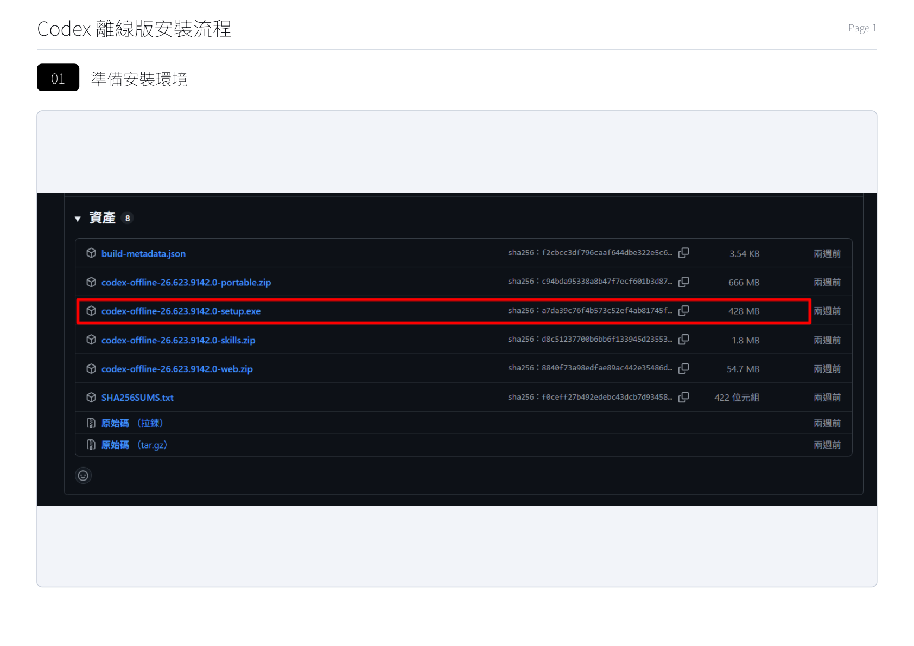
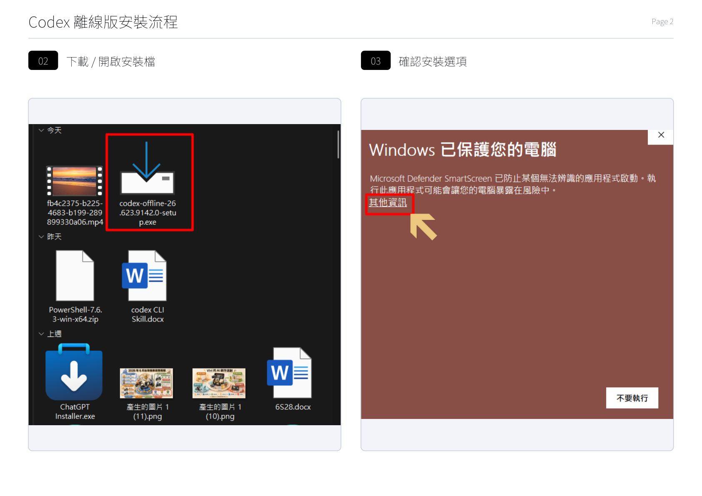
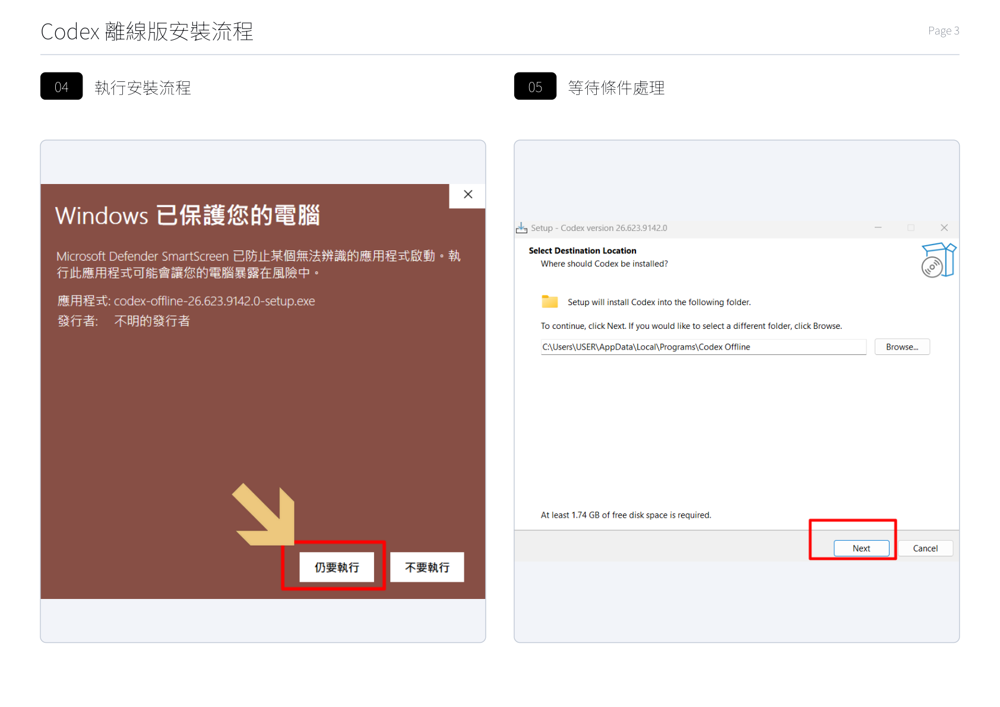
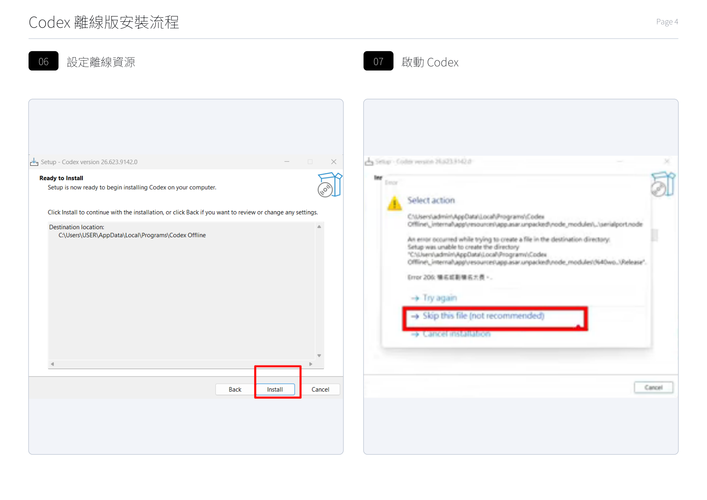
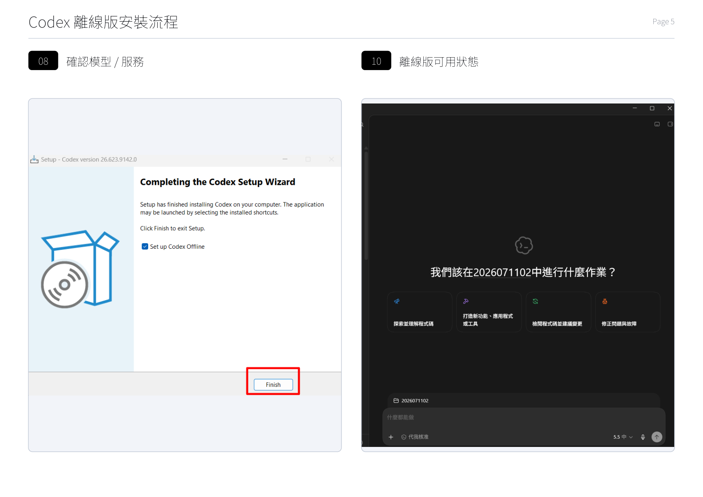
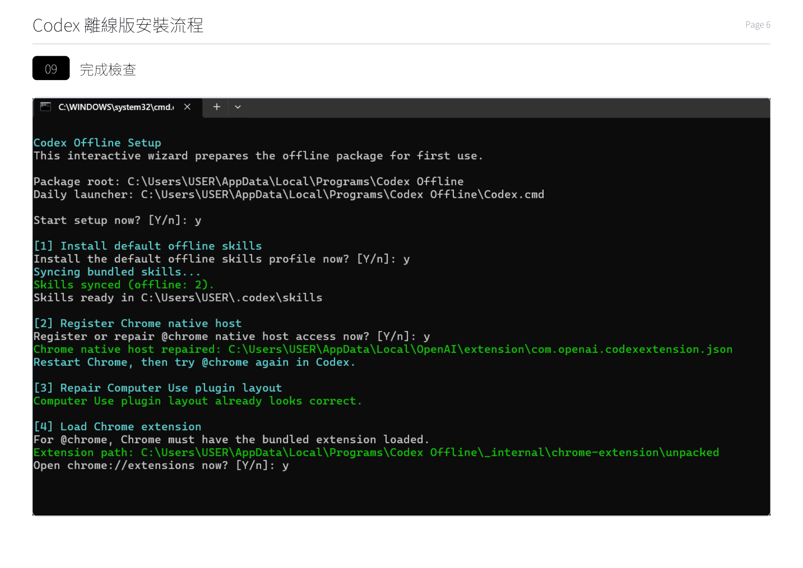

後端程式的語言，翻譯伺服器要靠它。
用 VS Code 來開啟、檢視專案檔案。
你的 Vibe Coding 夥伴（Claude／ChatGPT）。
阿亮老師準備了一個自動安裝程式，會自動幫你把整套課程要用的工具一次裝好，已經裝過的會自動略過不重裝。
後端語言
編輯器
Claude Code／Codex 要用
版本控制／上傳
AI 助手
AI 助手
終端機 AI
純文字編輯
liangclaw.bat（若被攔，按右鍵→「以系統管理員身分執行」）。跳出的視窗會自動開始檢查、安裝。node --version、python --version、git --version、code --version、claude --version、codex --version，都有版本號就成功。pip install -r requirements.txt 安裝，CH04 會教——別擔心現在還沒裝到。如果你的上課環境網路不穩、或完全離線，可以改用「離線版 Codex」的安裝檔（一個 codex-offline-…-setup.exe），在本機直接裝好，不必連網下載。下面用實際畫面帶你走一遍。






我們的 App 分成兩半：前端（手機上看到的畫面）和後端（背後幫你處理翻譯、查天氣的伺服器）。
後端我們用 Python 這個程式語言 + Flask 這個框架來寫。Python 好讀、好學、AI 也超會寫，是初學者的首選。
brew install python。新手照上面的圖形安裝即可。終端機（Terminal）是一個用「打指令」操作電腦的視窗。之後我們會用它來執行 Python、安裝套件、啟動網站。
$ 你在這裡打指令 電腦的回覆會顯示在這裡
打開終端機，輸入這行，按 Enter：
python --version Python 3.12.x ← 有看到版本號就成功了！
若顯示「找不到指令」或版本是 2.x：Windows 試 py --version；Mac 試 python3 --version。
「Open Folder」開啟你的專案資料夾，看到所有檔案。
點檔案在這裡開啟、編輯、貼上程式碼、Ctrl/Cmd+S 存檔。
選單 Terminal → New Terminal，不用另外開視窗。
| 工具 | 特點 | 怎麼用 |
|---|---|---|
| Claude（claude.ai） | 寫程式、長文很強 | 網頁對話貼提示詞 |
| ChatGPT | 通用、生態成熟 | 網頁對話貼提示詞 |
| Claude Code / Codex | 直接在電腦幫你改檔案 | 命令列（進階） |
mkdir my-translator cd my-translator code . （最後一行會用 VS Code 打開這個資料夾）
套件（package）是別人寫好、可以直接拿來用的工具包。例如 Flask 就是一個套件。
pip 是 Python 的套件安裝器，用它一行指令就能裝好需要的工具：
pip install flask Successfully installed flask... ← 看到這行就裝好了
之後我們會把所有需要的套件寫在 requirements.txt，一次全部安裝，不用一個一個裝。
python --version 看得到版本號。你有了一個「隨時能寫程式的工作台」——裝好 Python、編輯器、AI 助手，下一章開始就能真的動手做東西了。
找不到 python 指令？
Windows 沒勾 Add to PATH。重跑安裝檔選 Modify 補勾，或改用 py。
Mac 打 python 是 2.x？
改用 python3 和 pip3。
pip 不是內部指令？
試 python -m pip install ...。
公司/學校電腦裝不了？
可能有權限限制，改用個人電腦，或線上環境（如 Replit）。
環境好了，接下來要幫 App 準備「鑰匙」——各種 AI 服務的 API 金鑰：
本課程與專案僅供阿亮老師課程學員學習使用，禁止修改、轉傳、散布或商業使用。